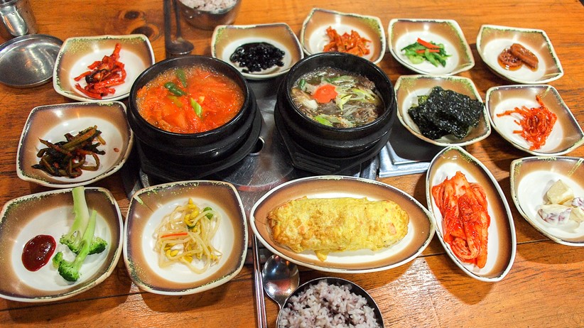
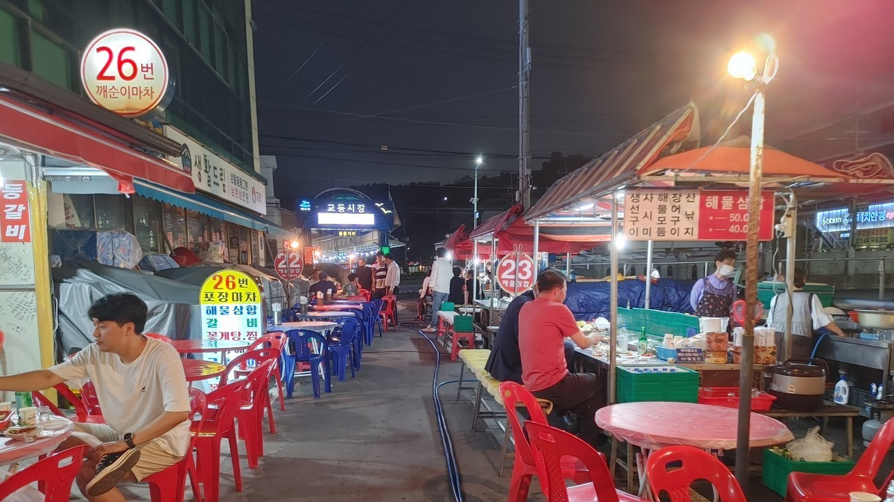

여서동 동트는집

김치찌개가 맛있는 곳
여서동에는 관광지는 없지만 먹을 곳은 있습니다.
동트는집은 많은 사람들에게 인정받는 한식집으로 이곳의 김치찌개와 계란말이는 정말 좋은 조합입니다.
매운 음식을 선호하지 않으시다면 뚝불(불백)도 좋은 선택지가 될수있습니다.
근처에는 다양한 식당이있기때문에 1차로 동트는집을 가서 김치찌개나 감자탕은 먹고 2차로 다른곳을 가는것도 좋습니다.
교동포차

낭만포차보다는 낭만이 약간 떨어지지만 맛과 가격은 확실한 교동포차입니다.
시내를 중심으로 낭만포차와 정반대쪽에있는 교동포차는 낮에는 농수산물을 판매하는 시장으로 운영하고 오후5시부터 연등천을 따라 포차가 즐비해집니다.
낭만포차와 같이 관광을 위해 조성된 포차거리가 아니기 때문에 분위기는 상대적으로 떠들석하지 않습니다.
바다는 안보이지만 충분히 매력이 있는 교동포차에서 문어+전복+삼겹살이 들어간 삼합을 먹어보세요